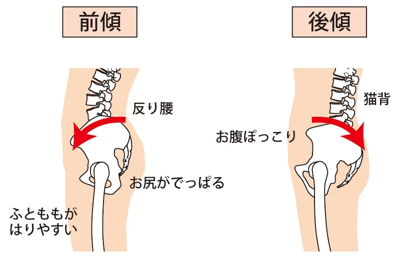
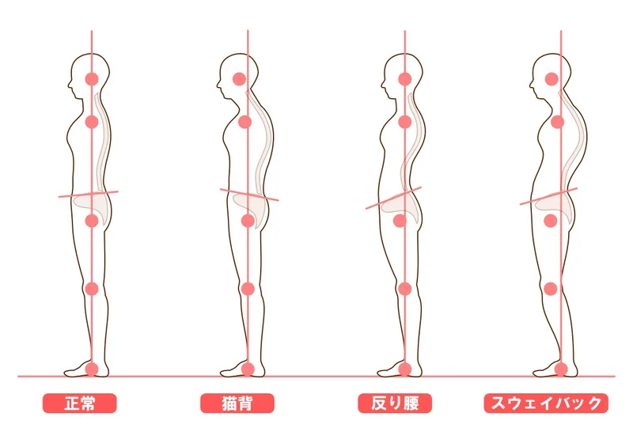

膝の伸び方を確認
立った時や歩いた時の膝の入り方を見ます。
立っていると膝が後ろへ入りすぎる、歩くと膝が突っ張る方へ。膝を固める癖だけでなく、姿勢・股関節・足首の使い方を確認します。
立つと膝が後ろへ入りすぎる感じがある
膝を伸ばし切って歩く癖がある
膝裏や前側が突っ張り、長く立つとつらい
反り腰やスウェイバック姿勢も気になる

立った時や歩いた時の膝の入り方を見ます。

膝を固めて支える姿勢になっていないか確認します。

膝だけでなく股関節と足首で立つ感覚を整えます。
反張膝は、立っている時に膝が過度に伸び、後ろへ入り込むように見える状態です。膝を固めることで楽に立てるように感じますが、膝裏や前側に負担が残りやすくなります。
骨盤が前へ出るスウェイバック姿勢、股関節の支え不足、足首の硬さが重なると、膝をロックして体を支える癖が出やすくなります。
膝を無理に曲げるのではなく、股関節・足首と一緒に支える感覚を作ります。
膝だけで支えていないか、重心の位置を見ます。
膝をロックしなくても立てるよう、支える場所を増やします。
膝を伸ばし切らず、自然に体重移動できる歩き方を確認します。
膝だけでなく、骨盤の位置や股関節・足首の使い方が関係することがあります。
無理に曲げ続けると疲れやすくなります。股関節や足首も使って自然に支えることが大切です。